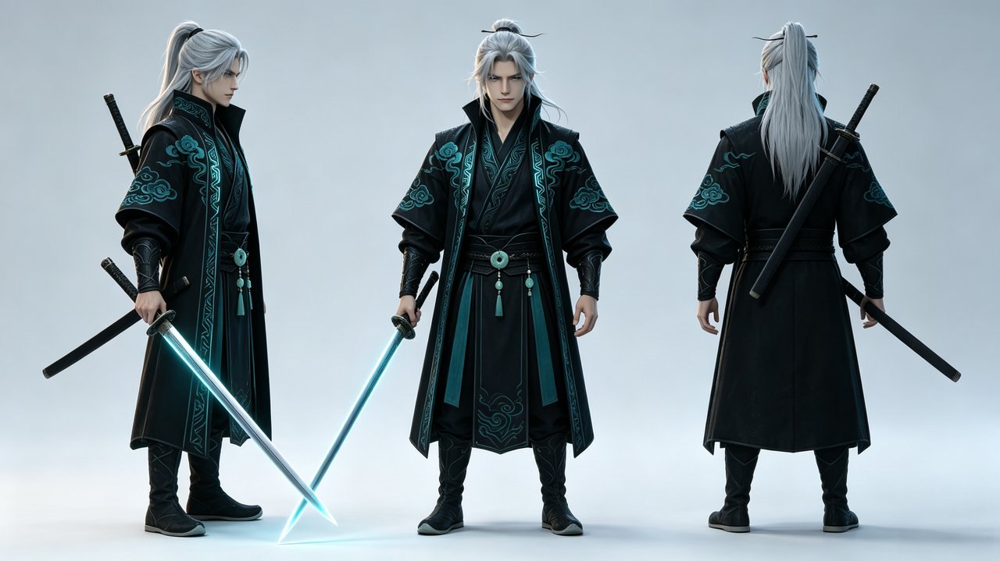
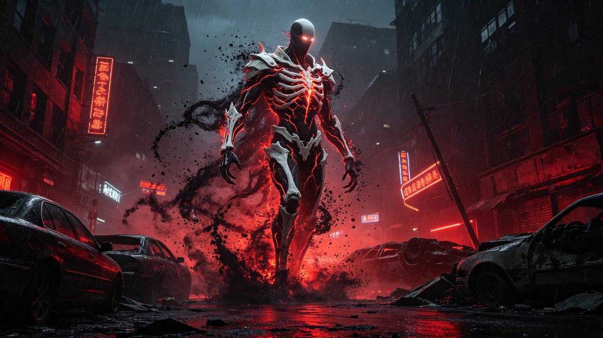

AI GENERATED CINEMATIC · 2026
《候》
超自然都市 · 仙侠 CG 预告片
时长 27.7s
1920×1080 / 30fps
创意
雨夜，霓虹漫溢的异变都市。一只乌鸦掠过废墟楼宇，云层深处有巨影一闪而逝；它追着地面的红色裂光飞向城市尽头，在灵骸生物粒子重组、睁眼的刹那被气浪撕碎，黑羽坠落。镜头切回街心——银发青衫的剑客早已立在雨中，仿佛已等候多时。青蓝剑光与暗红粒子在雨巷对撞爆散，白光褪去，极近的瞳孔里，恶魔剪影正缓缓消散。
以乌鸦的观察者视角完成世界观巡礼，以"等候多时"的静立完成人物塑造：文戏在静立与眼瞳，武戏在粒子重组与剑光对撞。美术取最终幻想式写实 CG，将仙侠服饰与现代都市废墟相融。
关键 AI 素材

角色三视图（侧/正/背）——全片角色一致性的"母版"，所有人物镜头以此为首帧

灵骸概念图——白骨甲胄、暗红光纹、黑粒子环绕，作为 BOSS 视觉锚点
制作流程
01 定锚文生图产出角色三视图与灵骸概念图，固定视觉锚点
02 分镜8 个镜头：环境镜头文生视频，人物镜头图生视频挂母版
03 约束每条 prompt 复用固定角色描述串，钉死服装与外观
04 成片剪映拼接、鼓点卡点、闪白转场、BGM 与音效分层
剪辑与特效练习
除 AIGC 内容生产外，日常进行蒙版（Mask）动画与后期特效练习，掌握画面揭示、文字生长、歌词跟踪等剪辑技法。
《GROWTH · 生长》
蒙版生长文字动画 · Mask 遮罩揭示 + 自然生长动效 · 1080p
《ECHOES · 回响》
歌词蒙版动效 · 文字跟踪 + Mask 转场 · 音乐短视频剪辑
更多作品